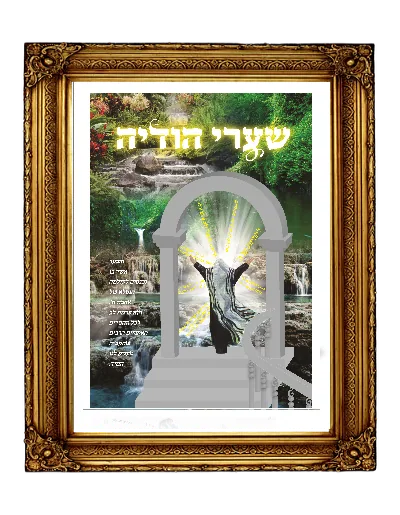

מדריך מעשי לחיי הודיה
מסלולים נהירים השוים לכל נפש בקיום מצות אהבת השי"ת על פי יסודות נאמנים מתורתם של חז"ל ומדבריהם המאירים של חכמי הדורות אשר מפיהם אנו חיים.

מסלולים נהירים השוים לכל נפש בקיום מצות אהבת השי"ת על פי יסודות נאמנים מתורתם של חז"ל ומדבריהם המאירים של חכמי הדורות אשר מפיהם אנו חיים.